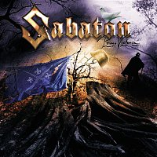

Historie Sabatonu
Sabaton vznikl koncem 90. let ve městě Falun ve Švédsku. Zakladateli byli Joakim Brodén a Pär Sundström, kteří sdíleli zájem o metal a historii. První nahrávky a demá kapely se objevila v začátcích nového tisíciletí a postupně získala pozornost díky specifickému zaměření textů. Kapela se pomalu rozšiřovala a během následujících let se proměnila na skupinu, která vystupuje po celém světě. Klíčovým bodem byl průlom s albem, které přineslo větší mezinárodní uznání.
Sabaton se proslavil především albem 'Primo Victoria' a později dalšími deskami, které pokračovaly v historickém vyprávění. Kapela se také přizpůsobila trendům a začala pořádat větší koncertní show se speciálními rekvizitami. Historie skupiny ukazuje, jak se malé regionální uskupení může vypracovat na mezinárodní úroveň díky originalitě a píli. Další milníky zahrnují velké festivaly a spolupráce s dalšími umělci. Podrobnější údaje najdeš na podstránkách této sekce.
Seznam
- 1999 – založení
- 2005 – Primo Victoria (průlom)
- 2010 – větší evropská turné
- 2019 – The Great War a velká show
- Pravidelné účasti na festivalech